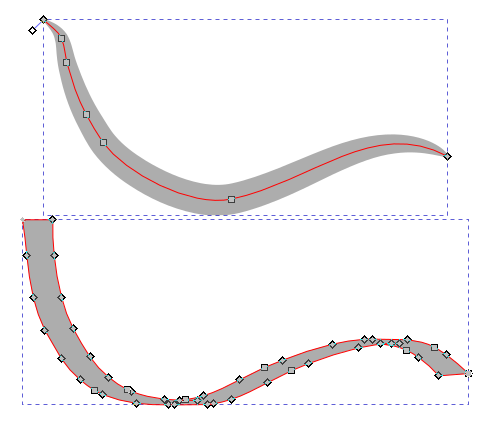
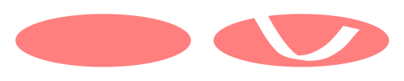
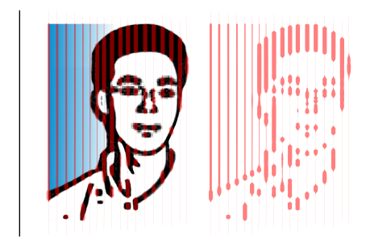

书法工具
快捷键：C 或者 Ctrl+F6
书法工具(  )类似国外古代使用的鹅毛笔工具，可以用来绘制有书法感觉的线条。
)类似国外古代使用的鹅毛笔工具，可以用来绘制有书法感觉的线条。
(书法工具支持压感设备，例如压力敏感度和倾斜敏感度；所以，使用绘图板类的设备，绘制效果比使用鼠标更好)
(连接绘图板需要重启inkscape)
书法工具不同于钢笔工具和铅笔工具。钢笔工具和铅笔工具创建的都是路径曲线，着色默认是 描边，未填充；而书法工具则是创建由路径曲线构成的区域，着色默认是 填充，未描边。
因为书法工具创建的线条都是区域，所以，其形状的宽度可以通过节点调整来更灵活地进行控制：
图 -1：铅笔工具 (上 )与书法工具 (下 )对比，红色是路径
- 图-1说明：
- 上方线条是铅笔工具创建，只有一条路径，做了LPE描边处理；无填充；下方线条是书法工具创建；路径所形成的区域做了填充处理；无描边；
操作方法
切换到书法工具(
 )；
)；鼠标在画布上点击并拖动一段距离，然后松开鼠标即可。
按空格键可以临时切换到选择工具(
 )，再按空格键则切换回书法工具。
)，再按空格键则切换回书法工具。(书法工具绘制的线条，样式会使用当前默认样式；您可以在菜单 编辑→首选项→工具→书法 中自定义其默认的样式)
辅助快捷键
在绘制线条过程中，按住左方向键或右方向键，可以动态调整笔划的宽度：左方向键变细，右方向键变粗。
如果按Home键，会将宽度变为最小；如果按End键，会将宽度变为最大。
Alt+X会马上切换到上方工具选项的 宽度 数值框，方便精确定义宽度数值。
按住上方向键或下方向键，可以动态调整笔划的角度。
在绘制线条时，如果按住Shift键，会把绘制的线条添加到之前选中的路径中。
在绘制线条时，如果按住Alt键，会从之前选中的路径中减去新绘制的路径。(挖空)
左侧是选中的椭圆，右侧是按住 Alt键在椭圆上画了一笔
按Esc或者Ctrl+Z可以取消当前绘制的路径。
引导线辅助雕刻：书法工具可以按某一条参照路径(引导线)的走向来创建新路径，新路径与参照路径的距离是可以控制的。操作方法如下：
用钢笔工具画一条参照路径，并选中此参照路径；(后续会以此参照路径为引导线来绘制新路径)
切换到书法工具；
保持Ctrl键不松手，点击并沿参照路径拖动鼠标，绘制出新的路径；(速度慢一些；拖动时圆圈变成绿色)
松开鼠标和Ctrl键，鼠标指针经过的轨迹就会创建一条新的路径；
重复上述操作，按住Ctrl键不松手，点击并沿参照路径拖动鼠标，只不过让圆圈大小变一下；(圆圈大小表示新路径与参照路径的距离)
多次操作后所创建的多条路径，就是生成的多条 雕刻线。(操作完成)
直接在画布上执行此操作没有任何意义，应该先在画布上放一张有明暗对比的图片，然后在图片上执行此操作，结果就是做出了图片的 雕刻。
(默认情况下，Inkscape会用新创建的路径做为下一条路径的引导线。如果想一直用原始路径做为引导线，请点击菜单 编辑→首选项→工具→书法，取消勾选 选择新路径 即可)
效果示例请参考下面的 图-2 。
{kind=link}
工具选项
( 无预置 )：这里有多个已经设定好的笔划形状(预置)，分别是蘸水笔、记号笔、刷子、摇摆、斑痕、临摹。
( 宽度 )：笔划的宽度，范围1-100，可以用左右方向键调整。
(
 )：压力开关。如果使用绘图板，那么激活此功能后，可以应用压力敏感度参数。
)：压力开关。如果使用绘图板，那么激活此功能后，可以应用压力敏感度参数。( )：背景雕刻。激活此选项后，书法工具会根据背景颜色的深浅来自动调整笔划的宽度：浅色变窄，深色变宽；白色最窄，黑色最宽。(可以用来创建雕刻效果，参考下面的 图-2)
( 细化 )：笔划粗细与速度的相关程度，范围是-100到100：大于0表示线条宽度随速度的增加而减小；0表示线条宽度与速度无关；小于0表示线条宽度随速度的增加而增大。(时快时慢会导致线条时宽时窄)
( 质量 )：范围0-100，让笔划产生滞后的惯性感觉，数值越大感觉越明显。(质量越大惯性越大)
( 角度 )：范围-90到90，绘画时笔尖相对画布水平方向的角度。
( 固定 )：范围0-100，笔尖的角度与笔的移动方向的相关程度：0表示笔尖的角度始终垂直于笔的移动方向；100表示笔尖的角度等于左侧 角度 框中的数值。
( 端点 )：范围0.00-5.00，用来设置笔划两端的端点的形状，只能是平的或者圆弧形：0.00表示端点是平的；5.00表示端点是椭圆形。
( 抖动 )：范围0-100，控制笔划粗细的随机性：0表示笔划粗细恒定；100表示笔划粗细有很强的随机变化。
( 摆动 )：范围0-100，模拟纸张对笔尖的阻力，增加一点打滑的效果：0表示无阻力，笔尖在纸张上不会打滑；100表示阻力很大，打滑严重。
图 -2：引导线辅助雕刻功能与工具选项中的背景雕刻选项结合使用
{kind=link}
{kind=link}
{kind=link}
- 图-2说明：
最左侧的纵向黑色线条是用钢笔工具创建的参照路径(引导线)；
中间是一张PNG头像，并用书法工具在头像上按引导线画了一些浅红色线条，所有线条都使用左侧的黑线做为引导线；
右侧的浅红色图形是所有线条画完后移除PNG头像的效果。
(浅红色线条的粗细变化是由工具选项中的 背景雕刻 选项自动生成的)
(用作参照路径的引导线可以很复杂，比如用文字来做为参照路径)
(图-2只使用了一条纵向直线做为引导线；您可以尝试使用一条斜向引导线，然后重复整个过程；甚至可以尝试使用两条不同方向的引导线或弯线作为引导线)